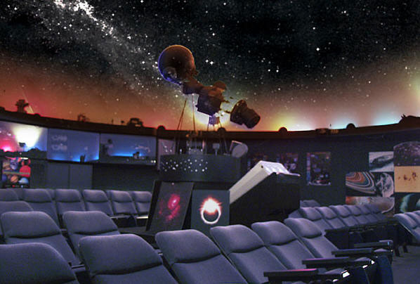

Prezentarea planetariului
Situat in centrul Bucurestiului,planetariul nostru se afla intr-o cladire mare,in forma de glob,cu acoperis mobil,pentru a proteja aparatura performanta de ploaie. In zilele senine,cand cladirea este deschisa publicului,in acoperis este o gaura pentru a face loc telescopului performant pentru a privi plantele si stelele, dar si in zilele innorate sau ploioase,programul este deschis publicului pentru a vizita micul muzeu din cadrul cladirii despre univers si sistemul solar in care ne aflam,si planetele sale.
In continuare,se pot observa poze din galeria noastra,din interiorul planetariului:
Galerie:
Istoricul Universului
Din punct de vedere istoric, au existat multe idei despre cosmos (cosmologii) și despre originea sa (cosmogonii). Teorii ale unui Univers impersonal, guvernat de legi fizice, au fost propuse
inițial de greci și de indieni. Filosofia chineză veche cuprindea noțiunea de Univers, incluzând atât tot spațiul cât și tot timpul.De-a lungul secolelor, îmbunătățirile în observațiile
astronomice și teoriile mișcării și gravitației au condus la descrieri tot mai exacte ale Universului. Epoca modernă a cosmologiei a început cu teoria relativității generale a lui Albert
Einstein din 1915, care a făcut posibilă prezicerea originii, evoluției și încheierii Universului, în ansamblu. Cele mai moderne teorii acceptate ale cosmologiei se bazează pe relativitatea
generală și, mai precis, pe modelul Big Bang.
Pagina wikipedia
Lasand la o parte definitiile pompoase,aici avem un videoclip distractiv care rezuma crearea pamantului: